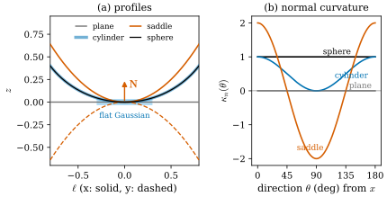
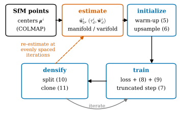

49.1 Problem and Key Idea
Goals
- GeoSplat이 지적하는 기존 geometry regularization의 두 한계, 곧 normal 같은 first order 양만 쓴다는 것과 그 양을 잡음에 약하고 고정된(static) 방법으로 추정한다는 것을 말할 수 있다.
- first order 정보(tangent plane, normal)와 second order 정보(principal curvature와 principal direction)가 각각 무엇을 정하는지 작은 예로 설명할 수 있다.
- GeoSplat이 3DGS 학습의 세 단계(initialization, gradient update, densification)에 geometry를 넣는 자리와, 그 geometry를 주는 두 estimator(manifold 기반, varifold 기반)의 역할을 한 그림으로 그릴 수 있다.
- 이 장의 기호를 논문의 기호, Chapter 46의 기호, 이 study set의 규약 사이에서 옮길 수 있다.
Prerequisites
- Chapter 46: Gaussian을 varifold의 원자로 읽기(Section 46.8), 네 논문의 지도(Section 46.9).
- Part IV: 가장 짧은 축이 normal이라는 것(Section 29.1), covariance의 rotation·scale parametrization((29.2.1)), split과 clone(Section 29.4).
- principal curvature와 principal direction(Definition 8.3.4, Section 39.2)과 Euler's formula(Theorem 8.3.5, (39.2.4)).
Motivation
Chapter 46은 Gaussian 하나를 varifold의 원자 \((\mu, P, q)\)로 읽는 법으로 끝났다. 위치는 중심, plane은 covariance의 가장 짧은 축에 수직인 평면, mass는 따로 둔 장부였다((46.8.3)). 그리고 Section 46.9의 지도에서 GeoSplat은 [BLM17]과 [BLM22]의 varifold 계산식을 3DGS로 가져온 논문으로 표시되었다. 이 장은 그 논문을 절마다 읽는다.
GeoSplat의 방향은 Section 46.8과 반대다. Section 46.8은 Gaussian의 covariance에서 plane을 읽었다. GeoSplat은 먼저 Gaussian 중심들이 놓인 surface의 normal과 curvature를 추정하고, 그 값에 맞춰 covariance와 위치를 정한다. 이 절은 논문이 왜 그렇게 하려는지(문제), 무엇을 하는지(핵심 아이디어), 그리고 무엇을 주장하는지를 정리한다. 수식의 세부는 Section 49.2부터 다룬다.
What GeoSplat Asks
3D Gaussian Splatting(3DGS) [Kerbl23]은 장면을 수많은 Gaussian primitive로 표현하고 미분 가능한 rasterization으로 학습한다. 렌더링 품질과 속도 덕분에 메모리, texture 등 여러 방향의 후속 연구가 나왔다. 그 가운데 한 흐름은 “Gaussian은 결국 물체의 surface를 근사해야 한다”는 사실을 regularization으로 쓰는 것이다. 예를 들어 GeoGaussian [Li25]은 densification으로 생긴 새 Gaussian을 원래 Gaussian의 tangent plane 위에 놓아 surface에서 동떨어진 outlier를 줄인다 [GeoSplat25, §1].
GeoSplat은 이 흐름에 두 가지 한계가 있다고 본다.
- 낮은 차수의 정보만 쓴다. 기존 연구는 normal vector 같은 first order 양을 주로 쓰고, curvature 같은 higher order 양은 거의 쓰지 않는다. 논문은 두 정보가 2D surface의 서로 다른 면을 기술한다고 쓴다 [GeoSplat25, §1]. 아래 Example 49.1.1이 그 뜻을 숫자로 보인다.
- 추정이 잡음에 약하고 고정되어 있다. local principal component analysis(local PCA)로 normal을 구하면 잡음에 민감하고, 학습된 normal 예측 모델(StableNormal [YeC24])은 드문 데이터에서 실패한다. 게다가 이런 prior는 학습 전에 한 번 구해 두고 바꾸지 않는다(static). 최적화 중에 Gaussian이 움직이고 늘어나면 prior는 점점 맞지 않게 된다 [GeoSplat25, §1, §4].
논문 §2.2는 목표를 두 줄로 다시 쓴다. 여러 geometric prior, 특히 curvature 같은 higher order prior를 3DGS 최적화에 쓰는 것, 그리고 그 prior를 잡음에 강하게 추정하는 것이다.
First Order and Second Order
점 \(q\)에서 surface의 first order 정보는 tangent plane \(T_q\mathcal{M}\), 곧 normal \(\mathbf{N}\)이다. second order 정보는 surface가 그 plane에서 방향마다 얼마나 빨리 떠나는지, 곧 normal curvature \(\kappa_n\)이다. Euler's formula(Theorem 8.3.5)에 의해 \(\kappa_n\)은 두 principal curvature \(\kappa_1, \kappa_2\)와 principal direction으로 정해진다. principal direction과 각 \(\theta\)를 이루는 unit tangent vector 방향으로
이고, surface를 tangent plane 위의 그래프로 쓰면 \(q\)에서 거리 \(\ell\)만큼 그 방향으로 간 곳의 높이가 \(\tfrac12\kappa_n(\theta)\ell^2 + O(\ell^3)\)이다(Proposition 8.2.10). 이 두 사실이 이 장 전체에서 쓰는 직관이다.
Example 49.1.1 (one tangent plane, four surfaces). 원점을 지나고 원점에서 tangent plane이 \(z = 0\), unit normal이 \(\mathbf{N} = e_3\)(위쪽)인 surface 넷을 보자. plane \(z = 0\), \((0, 0, 1)\)이 중심인 반지름 \(1\)의 sphere, 축이 \(\{x = 0,\ z = 1\}\)(\(y\) 방향)인 반지름 \(1\)의 cylinder, 그리고 saddle \(z = x^2 - y^2\)(Example 8.3.6의 running example)이다. \(\mathbf{N} = e_3\)에 대한 principal curvature \((\kappa_1, \kappa_2)\)는 차례로 \((0, 0)\), \((1, 1)\), \((1, 0)\), \((2, -2)\)이고 principal direction은 \(x\)축과 \(y\)축이다. 네 surface의 normal은 원점에서 똑같다. normal만 쓰는 regularizer에게 이 넷은 구별되지 않는다.
그런데 tangent plane 위에 반지름 \(\ell = 0.1\)인 납작한 Gaussian을 놓으면, 그 가장자리가 surface에서 떨어진 높이는 다르다. sphere에서는 모든 방향으로 \(1 - \sqrt{1 - 0.01} = 0.00501\)이고, cylinder에서는 \(x\) 방향으로 \(0.00501\), \(y\) 방향으로 \(0\)이며, saddle에서는 \(x\) 방향으로 \(+0.01\), \(y\) 방향으로 \(-0.01\), 대각선 방향(\(\theta = 45^\circ\))으로 \(0\)이다. Gaussian 반지름의 \(5\)–\(10\%\)만큼 surface를 벗어난다. 이것을 줄이려면 방향마다 Gaussian의 길이를 \(\kappa_n(\theta)\)에 맞춰야 하고, 그러려면 second order 정보가 필요하다.
Verification: verify/v-49-1-problem-key-idea.py
Figure 49.1.1이 이 예를 그린 것이다. (a)는 네 surface를 \(x\) 방향(실선)과 \(y\) 방향(파선)으로 자른 cross-section이다. 모두 원점에서 수평선 \(z = 0\)에 접하고, 주홍 화살표 \(\mathbf{N}\)이 공통의 normal이다. 원점 근처의 하늘색 띠가 tangent plane에 놓인 납작한 Gaussian이다. 띠 끝(\(\ell = \pm0.3\))에서 sphere와 cylinder의 \(x\) cross-section(겹쳐 그린 검정과 굵은 연한 파랑)은 \(0.046\), saddle은 \(+0.09\)(실선)과 \(-0.09\)(파선)만큼 띠에서 벗어난다. (b)는 (49.1.1)의 \(\kappa_n(\theta)\)이다. sphere는 상수, cylinder는 \(\cos^2\theta\), saddle은 \(2\cos2\theta\)로 부호까지 바뀐다. normal이 같아도 이 곡선은 전혀 다르다.

The Key Idea
GeoSplat의 답은 두 부분이다 [GeoSplat25, §1, §3].
- geometry로 제약한 최적화(framework). 3DGS 학습은 initialization, optimization, densification으로 이루어진다. GeoSplat은 세 단계 모두에 normal과 curvature를 넣는다.
- initialization: Gaussian의 한 축을 normal에 맞추고 그 scale을 아주 작게 둔다. 나머지 두 축은 principal direction에 맞추고 scale의 비를 principal curvature의 비로 정한다(covariance warm-up). 거의 평평한 곳에는 midpoint interpolation으로 Gaussian을 더 넣는다(upsampling).
- optimization: 위치의 gradient update에서 normal 성분을 잘라 낸다(truncated gradient). scale과 rotation이 curvature가 정한 모양에서 벗어나면 벌점을 준다(shape regularization).
- densification: split의 새 위치를 principal direction 위로 제한하고, clone의 이동에서 normal 성분을 자른다.
- 잡음에 강하고 빠른 동적(dynamic) 추정. 위의 모든 단계는 Gaussian마다 normal \(\tilde{\mathbf{u}}^i_3\)과 principal curvature·direction \((\tau^i_d, \tilde{\mathbf{w}}^i_d)\)을 요구한다. 논문은 두 estimator를 준다.
- manifold 기반: 각 Gaussian이 국소적으로 smooth surface 위에 있다고 가정하고, Laplacian의 “Leibniz 규칙 위반량”으로 metric과 shape operator를 표현한다(Theorem 3.2, 부록 E). Section 49.4와 Section 49.5.
- varifold 기반: Gaussian 중심들을 point cloud varifold로 보고 [BLM22]의 approximate second fundamental form을 \(2 \times 2\) matrix로 바꾼다(eq. (12), 부록 D). Section 49.4.
Figure 49.1.2가 이 둘을 한 고리로 그린 것이다. 왼쪽 위의 SfM 점(Gaussian 중심의 초기값)에서 시작해 오른쪽으로 “geometry 추정 → initialization”으로 가고, 아래 줄에서 “학습 → densification”을 되풀이한다. 주홍 파선이 이 논문의 핵심인 “다시 추정하기”다. densification으로 Gaussian이 늘어나면 geometry를 다시 추정하고, 그 값이 다음 학습과 densification을 제약한다. 상자 안의 번호는 논문의 식 번호다.

What the paper claims
Abstract, §1, §6에서 논문이 주장하는 기여를 모으면 다음과 같다. 이것은 논문의 주장이다. 어디까지 뒷받침되는지는 Section 49.6과 Section 49.7에서 따진다.
- first order와 second order geometry를 모두 써서 3DGS 학습의 전 과정(initialization, gradient update, densification)을 제약하는 일반적인 framework. 예: principal curvature로 초기 scale을 정해 무작위 초기화보다 surface를 더 잘 덮는다.
- local manifold 같은 기하 구조에 기반한, 효율적이고 잡음에 강한 estimator 두 가지. 백만 개 수준의 Gaussian을 수십 초 안에 처리하므로 학습 중에 다시 추정할 수 있다(dynamic prior).
- novel view synthesis 데이터셋(Replica 8장면, ICL 4장면)에서 3DGS와 기존 baseline(특히 GeoGaussian)을 능가하고, 학습 view가 적을 때 이득이 더 크며 artifact가 적다.
- 평평한 곳을 찾는 기준으로 mean curvature보다 mean absolute curvature가 맞다(SAGS [Ververas25] 비판).
Notation
논문은 3DGS, Riemannian geometry, varifold 세 분야의 기호를 함께 쓰고, 같은 글자를 여러 뜻으로 쓰는 곳도 있다. 이 장은 논문의 기호를 따르되 아래처럼 정리한다.
두 가지를 특히 기억하자. 첫째, GeoSplat의 \(\tau_1, \tau_2\)는 크기 순이다. warm-up에서 긴 축을 “작은 curvature” 쪽에 두므로 크기가 중요하다. 둘째, normal \(\tilde{\mathbf{u}}^i_3\)의 부호는 어디서도 정해지지 않는다(cross product나 eigenvector의 부호는 임의다). 그래서 \(\tau_d\)의 부호도 정해지지 않고, 부호에 무관한 양(\(\abs{\tau_1/\tau_2}\), mean absolute curvature, Gaussian curvature \(\tau_1\tau_2\))만이 의미를 갖는다. [BLM22, §7.1]도 같은 점을 지적한다.
Summary
- GeoSplat은 기존 3DGS geometry regularization이 normal 같은 first order 양만 쓰고, 그 양을 local PCA처럼 잡음에 약한 방법으로 한 번만(static) 추정한다고 비판한다.
- normal이 같아도 surface는 방향마다 다르게 휜다. 그 차이가 normal curvature \(\kappa_n(\theta) = \kappa_1\cos^2\theta + \kappa_2\sin^2\theta\)이고, 반지름 \(\ell\)인 납작한 Gaussian은 대략 \(\tfrac12\abs{\kappa_n}\ell^2\)만큼 surface를 벗어난다((49.1.1), Example 49.1.1).
- GeoSplat은 normal과 principal curvature·direction을 initialization, gradient update, densification에 모두 넣고, 그 값을 manifold 기반과 varifold 기반 estimator로 학습 중에 다시 추정한다(Figure 49.1.2).
- 이 장의 기호는 Table 49.1.1을 따른다. \(\tau_1, \tau_2\)는 크기 순이고 normal의 부호는 정해지지 않는다.
다음 절에서는 논문 §2와 부록 A의 준비를 읽는다. 3DGS의 rendering 식, Gaussian이 놓인 장면을 “singular point를 빼면 smooth한 manifold 몇 개”로 보는 가정(Definition 2.1), 그리고 논문이 요약한 varifold의 정의를 Chapter 46의 정의와 하나씩 맞춰 본다.
Quick check
Exercise 49.1.1 ★ 어떤 점에서 principal curvature가 \(\kappa_1 = 2\), \(\kappa_2 = 0.5\)이다. tangent plane에 놓인 반지름 \(0.1\)의 납작한 disk Gaussian의 가장자리는 두 principal direction에서 surface와 얼마나 벌어지는가(2차 근사)? 두 방향 모두 \(0.0025\)만큼만 벌어지게 하려면 각 방향의 반축을 얼마로 해야 하는가?
Solution
\(\tfrac12\kappa\ell^2\)이므로 \(\kappa_1\) 방향은 \(\tfrac12\cdot2\cdot0.01 = 0.01\), \(\kappa_2\) 방향은 \(\tfrac12\cdot0.5\cdot0.01 = 0.0025\)이다. \(\tfrac12\kappa\ell^2 = 0.0025\)를 풀면 \(\kappa_1\) 방향은 \(\ell = 0.05\), \(\kappa_2\) 방향은 \(\ell = 0.1\)이다. 반축의 비는 \(\sqrt{\kappa_1/\kappa_2} = 2\)이고, curvature의 비 \(4\)가 아니다. Example 49.3.3에서 이 차이를 다시 본다.
Verification: verify/v-49-1-problem-key-idea.py
Exercise 49.1.2 ★ 참인가 거짓인가? “Gaussian의 가장 짧은 축이 surface의 normal과 정확히 같으면 Gaussian은 surface에 붙어 있다.” 이유를 쓰라.
Solution
거짓이다. normal이 같다는 것은 중심에서 tangent plane이 맞는다는 first order 조건뿐이다. surface가 휘어 있으면 납작한 Gaussian의 가장자리는 방향 \(\theta\)마다 대략 \(\tfrac12\abs{\kappa_n(\theta)}\ell^2\)만큼 벗어난다. 예를 들어 반지름 \(1\)의 sphere에서 반지름 \(0.3\)인 disk는 가장자리에서 \(0.046\)만큼 떨어진다(Figure 49.1.1). 중심이 surface 위에 있다는 것도 따로 필요한 조건이다.
Exercise 49.1.3 ★ saddle \(z = x^2 - y^2\)의 원점에서 mean curvature \(H = \tfrac12(\kappa_1 + \kappa_2)\)와 \(\theta = 45^\circ\) 방향의 normal curvature를 구하라(\(\mathbf{N} = e_3\)). “\(H = 0\)이면 그 근처는 평평하다”는 판정은 왜 틀리는가?
Solution
\(\kappa_1 = 2\), \(\kappa_2 = -2\)이므로 \(H = 0\)이고, \(\kappa_n(45^\circ) = 2\cdot\tfrac12 - 2\cdot\tfrac12 = 0\)이다. 그러나 \(x\)축과 \(y\)축 방향으로는 \(\kappa_n = \pm2\)라서 거리 \(0.1\)에서 \(\pm0.01\)만큼 휜다. \(H\)는 두 principal curvature의 평균이라 부호가 반대인 휨이 상쇄된다. 평평함을 판정하려면 두 값의 크기를 모두 봐야 한다. 이것이 GeoSplat이 mean absolute curvature를 쓰는 이유다(Section 49.3).
Verification: verify/v-49-1-problem-key-idea.py
Exercise 49.1.4 ★ GeoSplat은 학습 전에 한 번 구한 normal을 끝까지 쓰는 방법을 “static prior”라 비판한다. 3DGS 학습에서 static prior가 점점 맞지 않게 되는 이유를 두 가지 들어라.
Solution
첫째, Gaussian의 위치 \(\boldsymbol{\mu}^i\)가 최적화로 움직인다. 처음 위치에서 구한 normal과 curvature는 새 위치의 것이 아니다. 둘째, densification(split, clone)으로 Gaussian이 늘어나 이웃이 바뀐다. 이웃의 배치로 구한 normal과 curvature는 이웃이 바뀌면 달라지고, 새 Gaussian에는 prior가 아예 없다. 그래서 GeoSplat은 일정한 간격으로 다시 추정한다(Figure 49.1.2의 주홍 파선).